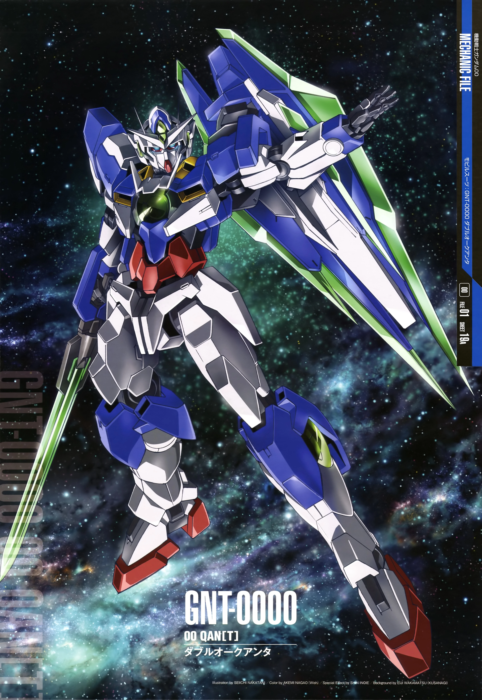

in the anime series Mobile Suit Gundam, there's a myriad of giant robots, called mobile suits, that people pilot

The final Gundam piloted by Setsuna F. Seiei from Mobile Suit Gundam 00, the Qan[T] (pronounced Quanta, similar to Quantum) is quite special not because of its amazing speed or devastating firepower, but because is the pinnacle of the ethos of the Gundam 00 series, the understanding between people: the Qan[T] allows the pilot to communicate thelepatically not just with everyone around him, but even with extraterrestrial life forms.
During the short scene where it actually fights right at the end of the movie, it is quite powerful in terms of firepower, but the impact of the Qan[T] doesn't rely on that, but as the incarnation of the core message of the anime.